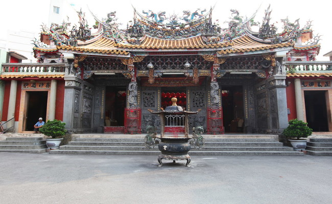
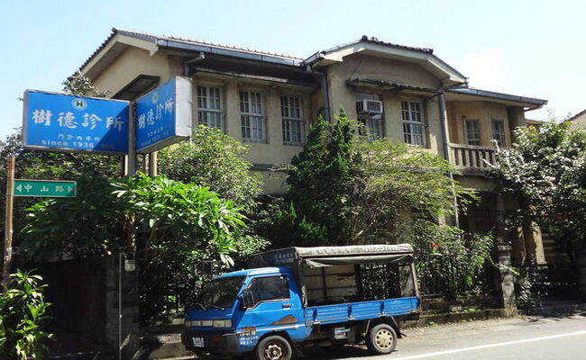
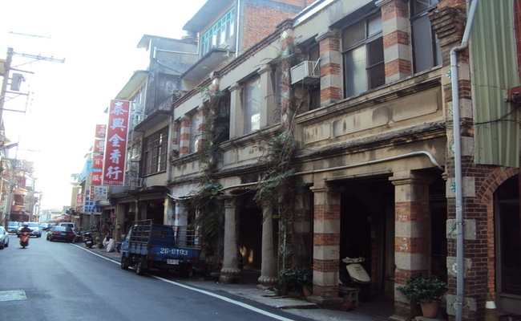
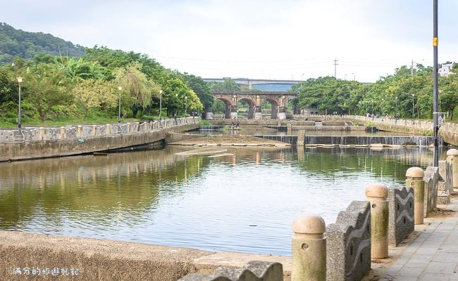
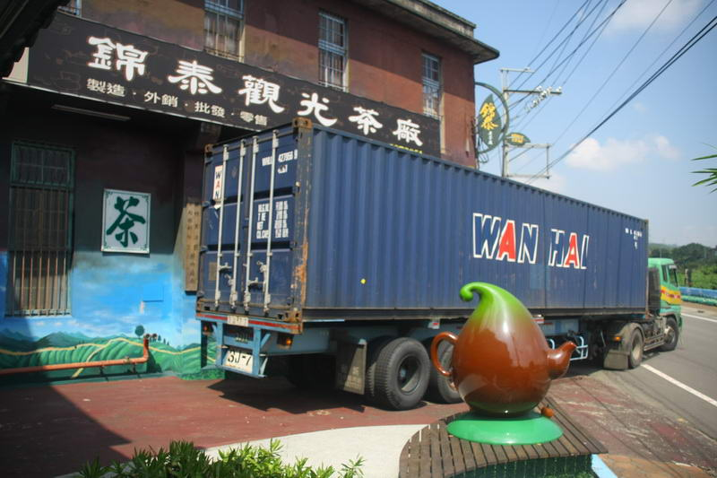
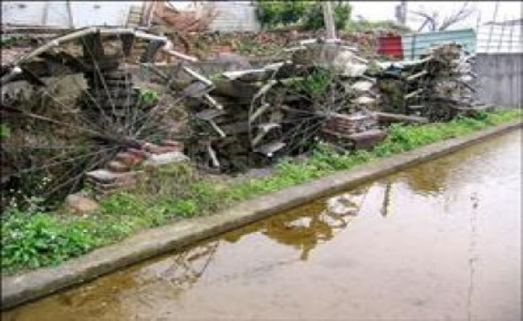

客庄文化休閒觀光導覽
報名由此去
一、六家水圳園區導覽
二、新埔小鎮文化導覽
三、關西小鎮文化導覽
四、大隘地區文化導覽
五、竹東客庄文化導覽
關西小鎮文化導覽
太和宮

關西分駐所及警察宿舍群
歷史沿革
該建物在日治時代為日本殖民當局在當地的行政單位辦公處所。該建物早期為當地「保甲書記事務所」辦公處所，該單位專責關西莊內戶籍與地方行政事務。後來，新竹郡役所警察課在該建物發生火災後將其改建並接收為分支辦公處所。戰後，地方政府又將其接收繼續作警政單位辦公處所使用。2010年代，由於分駐所建築年代已久，設施不敷使用，加上漏水問題，地方政府有關當局發起整修遷移計畫，而縣政府也規劃了一幢地上3層、地下1層，仿現時分駐所之日式風格新建築做為新的辦公用地。新的關西分駐所於2017年3月27日落成，並遷移至新址，原分駐所正式走入歷史，配合周邊規劃為關西古蹟藝術園區。
建築描述
關西分駐所轄屬新埔分局，為一樓RC磚造建築，上覆日本瓦，入口大門處做一三角山牆，並有多層線腳設計，門柱上有西洋幾何圖案之柱飾，同為當時十分流行之「興亞樣式」建築。 所長宿舍及其他警員宿舍則為日式木造建築物。
其他資訊
待補
樹德診所

鄭氏祠堂
歷史沿革
關西鄭氏一族係從廣東饒平來臺墾殖，最初是六世祖鄭清雅在弱冠之年來臺，卜居臺北鶯歌尖山下橋頭一帶．至九世祖鄭成珋於乾隆末年遷往蘭陽頭城，經營打金店舖，並開墾二結、三結及四結，頗有積蓄。後恐牽連閩粵械鬥，又於道光14年(1834)遷到淡水廳竹北二堡咸菜甕，今關西北門口附近從事墾殖。除了購買田屋外，也大約在此時建立了鄭氏滎陽祠堂。傳說創建之初，勘輿師建議採「丑山兼艮」，即略偏北的風水坐向，主財運亨通。但家族決議改採「艮山兼丑」，即坐東北朝西南的坐向，主文運，可見鄭氏家族重視科舉，培育子弟之用心。
建築描述
祠堂正立面材料使用主要為紅磚與石材，牆基皆以石砌成，塔壽柱之琴腳（櫃檯腳）是唯一加雕刻的部分，牆面以紅磚平磚順砌；內部隔間及背面部分牆體則為泥磚造，卵石基腳，外牆以穿瓦衫保護，以防止雨水侵蝕牆身。
其他資訊
待補
石店仔老街

東安古橋
歷史沿革
關西地區因牛欄河流過，聯絡街區與三墩地區（今東安里上三屯）之橋樑，原本靠木造便橋，卻總在山洪爆發時便被沖毀，交通也隨之中斷。地方人士因而倡議建橋，日昭和8年（1933年），由政府、地方仕紳、三墩地區居民共同出資，聘請日本技師設計，採集紋理細緻的本地石塊，交由本地知名的石匠李鎮帶隊砌築，昭和8年（1933年）1月12日興工建築，同年11月底竣工；整體交通體系完成通行則在1935年8月。 1935年正式通車後，立碑紀念，碑文敘述「架設費計金四千六百六拾九元」，牛欄河東岸居民捐款2千多元，其中周源發250元，周源寶200元，三屯居民每戶捐1圓以上的人名都刻在橋東端的石碑上。此橋興建之後，東安與東山地區豐富的農產，大量運出街上販售，算是關西開發史中重要的交通橋樑。隨著時代繁榮發展，車輛流量倍增，為紓解日益繁忙的交通，於民國92年(2003)，在老橋旁邊另築同樣是的五拱的新橋。新舊兩橋並立，兩者造型皆美。
建築描述
東安古橋，五孔拱形石橋，造型十分優美，橋身亦非常堅固耐用，經過數十寒暑的人來車往，依然完好如昔，民國99年(2010)，經新竹縣政府文化局公告為古蹟。
其他敘述
無
牛欄河

臺紅茶業文化館
歷史沿革
「台灣紅茶公司」關西茶廠位於新竹縣，成立於1937年日治時代，是台灣歷史最悠久的老茶廠之一，迄今每年仍生產十萬斤茶葉，是台灣少數仍持續有外銷茶葉的茶廠。台灣紅茶公司在原廠房二樓擴建成立了「臺紅茶業文化館」，藉以見證紅茶公司70餘年來的發展和外銷的輝煌歷史，也可以說是台灣早期的茶業發展史，同時也可了解客家製茶產業和客家文化。「臺紅茶業文化館」館內也提供專人的導覽說明，以及古文物的展示，更進一步清楚了解台灣紅茶公司輝煌的歷史。世界紅茶風行時，關西由於氣候與地形優良，製茶業蓬勃發展，其中最具代表性的就是關西羅家的「台灣紅茶公司」。台灣紅茶公司的蒸菁綠茶粉色澤及品質冠全台，目前也是台灣唯一生產碎型蒸菁綠茶外銷，並供應國內研磨綠茶粉的公司。
建築描述
茶廠仍保留了日治時代半木造、半磚造的紅磚廠房建築，留有日據時代蓋有窯章的紅磚與瓦當、木造的屋樑結構，讓人有種走進時光隧道的感覺。
其他資訊
無
錦泰茶工廠

羅屋書院
歷史沿革
羅屋書院位於新竹縣關西鎮南山里，為關西羅祿富派下的書房。南山里舊時屬上南片庄，是緊鄰關西鎮都市計畫的農村。鳳山溪穿越全里，也是北邊的里界，聚落背倚山，前臨南面之鳳山溪，三面環山，形似畚箕。羅姓同宗，清朝乾隆拓墾時代即居於本區，成為單姓聚落。上南片羅家三派：關西之開墾始於乾隆57年，平埔衛阿貴家族、閩籍連際盛及陳長順先後入墾。羅秀文於乾隆58年向連際盛墾號承墾上南片，是為羅家五欽派下；此後九如派下，以及維齊派下羅家移民，亦來此承墾，三派下羅家共居於此。
建築描述
「羅屋書院」為百年的三合院古厝，此稱號是近幾年來地方文史工作者所給予的名稱，早期地方人士稱：河背大樹下新屋。稱”羅屋書院”主要因為此建築過去曾經扮演新竹關西羅氏家族內私塾的角色，亦有其淵源。透過如此的稱號，目地在於緬懷過去的同時，也期望能在將來透過各樣的活化措施，使其成為客家文化與良善價值傳承的平台。所以，羅屋書院的發展，並不會侷限在書院建築的本體，會與地方及週遭相互結合，讓客庄的文化與特色能持續傳揚。
其他資訊
無
南山里水車

關西農會仙草加工廠
歷史沿革
近年來以仙草聞名的關西鎮，可是讓逐漸沒落的農業生產，重新找到最具特色的第二春。目前仙草栽種於新竹縣關西鎮、芎林鄉，苗栗縣銅鑼、三義、桃園縣新屋鄉，和花蓮縣鳳林鄉。仙草是外型像薄荷葉般小巧翠綠、略帶絨毛的台灣原生植物。仙草每年自3~4月開始種植至當年9~10月成熟後採收。但是就屬關西鎮的種植面積最大，且經過桃園農業改良場指導加工技術的改進，研發出多款的仙草產品。
建築描述
待補
其他資訊
無
文昌祠